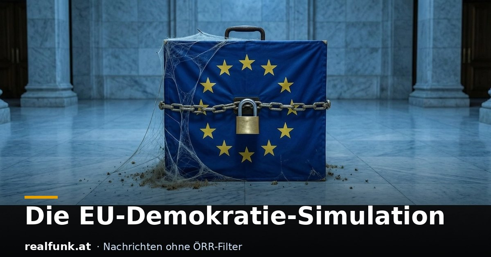

Die EU-Demokratie-Simulation

Die Kommission, die als Einzige Gesetze vorschlagen darf, wird nicht gewählt. Das gewählte Parlament darf keine Gesetze einbringen. Die Einstimmigkeit fällt, sobald sie das Falsche verhindert. Und der Staatsfunk liefert die passende Wortwahl. Eine Durchschau.
Fangen wir bei der Macht an. Gesetze vorschlagen darf in der EU fast ausschließlich die Europäische Kommission, und die wählt niemand direkt. Ihre Präsidentin wird von den Staats- und Regierungschefs ausgehandelt und vom Parlament bestätigt. Das einzige direkt gewählte Organ, das Europäische Parlament, darf umgekehrt kein einziges Gesetz selbst einbringen, es darf die Kommission nur höflich darum bitten. Wer den Hebel hat, steht nicht auf dem Wahlzettel. Wer auf dem Wahlzettel steht, hat den Hebel nicht.
Dass das kein Zufall ist, zeigte 2019. Das sogenannte Spitzenkandidaten-Modell sollte den Bürgern wenigstens mittelbar Einfluss auf den Kommissionschef geben: Wer als Spitzenkandidat die Wahl gewinnt, soll den Posten bekommen. Kaum wurde es unbequem, wurde es beerdigt. Die Staats- und Regierungschefs übergingen alle Spitzenkandidaten und kürten im Hinterzimmer Ursula von der Leyen, die bei keiner Europawahl als Kandidatin angetreten war. Das Parlament winkte sie mit hauchdünner Mehrheit durch. Das demokratische Feigenblatt wurde abgeräumt, sobald es die eigene Auswahl beschränkte.
Am deutlichsten wird das Muster bei der Einstimmigkeit. In der Außen- und Erweiterungspolitik kann ein einziges Mitgliedsland blockieren, jahrelang stand dafür Ungarns Viktor Orban. Solange dieses Vetorecht galt, war es heiliges EU-Prinzip. Kaum war Orban im April 2026 abgewählt, wurde der Ruf lauter, die Einstimmigkeit gleich ganz abzuschaffen und auf Mehrheitsentscheidungen umzustellen. Eine Gruppe von zwölf Staaten, darunter Deutschland, Frankreich und Italien, wirbt dafür, auch die Kommissionspräsidentin. Der schöne Haken: Um die Einstimmigkeit abzuschaffen, braucht es Einstimmigkeit. Das Prinzip gilt, bis es die Falschen schützt.
Wo die Regeln nicht reichen, hilft das Geld. Über den Konditionalitätsmechanismus kann Brüssel Mittel zurückhalten, wenn ein Land nicht spurt, das neue Zwei-Billionen-Budget knüpft Auszahlungen noch stärker an Auflagen. Die Kommission nennt das Rechtsstaatsschutz, für die betroffenen Parlamente ist es ein Hebel von außen. Und die Zustimmung? Eine vom EU-Parlament bezahlte Umfrage bescheinigt der EU verlässlich hohe Werte, die der ÖRR ungeprüft druckt, während bei Wahl um Wahl mehr Menschen EU-kritische Parteien wählen. Eine Bürgerinitiative mit hunderttausenden Unterschriften wurde gar nicht erst registriert. Direkte Demokratie ist willkommen, solange sie das gewünschte Ergebnis liefert.
Und die Rechnung zahlen die Bürger. Energie ist teuer wie kaum je zuvor, der Wettbewerbsbericht von Mario Draghi warnte selbst vor hohen Energiepreisen, Überregulierung und einem wachsenden Rückstand auf die USA und China. Der Bürokratieapparat wächst schneller als die Wirtschaft, die ihn tragen soll. Bei den Zukunftstechnologien reguliert Brüssel zuerst und baut später: Der AI Act, die Digitalauflagen und die Krypto-Verordnung MiCA bringen Vorschriften, bevor überhaupt eine europäische Spitzenfirma existiert, und Kritiker warnen vor der Abwanderung von Kapital und Talent. Während gut ausgebildete Junge das Land verlassen, setzt die Migrationspolitik auf einen Zuzug, dessen Qualifikations- und Integrationsbilanz die Politik selbst kaum offenlegt. Über all das entscheidet eine Ebene, die der Wähler nicht abwählen kann.
Und der zwangsfinanzierte Rundfunk? Er liefert die Tonspur. Dieselbe Handlung bekommt zwei Vokabeln, je nach politischer Himmelsrichtung. Wer genehm ist, demonstriert, wer es nicht ist, randaliert. Die einen sind Aktivisten, die anderen Aufwiegler. Ein Staatschef, den man schätzt, ist Präsident, einer, den man ablehnt, ist Machthaber. Einer Partei rechts der Mitte wird die Einstufung reflexhaft angeheftet, während die Blockade eines Parteitags von links freundlich als antifaschistisch verstehend firmiert. Über das abgewählte Ungarn schrieb der ÖRR Wörter wie Einschüchterung und russisches Modell in die eigene Stimme, bei der eigenen Institution bleibt er klinisch. Und wenn beide Seiten schießen, heißt es plötzlich gegenseitig, und der Urheber verschwindet in der Symmetrie.